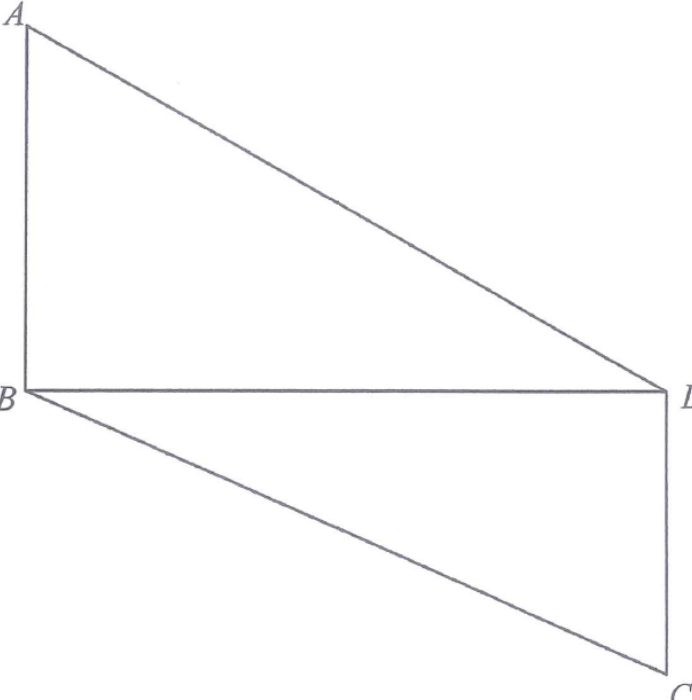

度量 · 梯形面積

$$18^{2}+BD^{2}=30^{2}\quad\Longrightarrow\quad BD=\sqrt{900-324}=24\text{ cm}$$
所以 $\triangle BCD$ 在 $D$ 為直角。
$$DC^{2}+24^{2}=26^{2}\quad\Longrightarrow\quad DC=10\text{ cm}$$
$BD$ 把梯形分成 $\triangle ABD$ 與 $\triangle BCD$：
$$\frac{1}{2}\times18\times24+\frac{1}{2}\times10\times24=216+120=336\text{ cm}^{2}$$
$$\frac{1}{2}(18+10)\times24=336\text{ cm}^{2}$$